【ios】Storyboard教程
（Storyboard）是一个能够节省你很多设计手机App界面时间的新特性，下面，为了简明的说明Storyboard的效果，我贴上本教程所完成的Storyboard的截图：
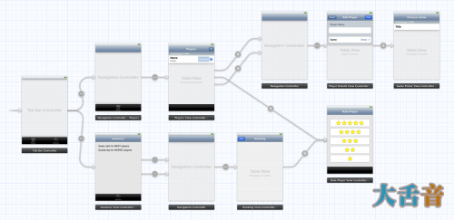
现
在，你就可以清楚的看到这个应用究竟是干些什么的，也可以清楚的看到其中的各种关系，这就是Storyboard的强大之处了。如果你要制作一个页面很多
很复杂的App，Storyboard可以帮助你解决写很多重复的跳转方法的麻烦，节省很多时间，以便你能够完全的专注于核心功能的实现上。
开始
首先启动Xcode，新建一个工程，我们在这里使用Single View App Template，这个模板会提供一个类和一个Storyboard，免去我们自己创建的麻烦。
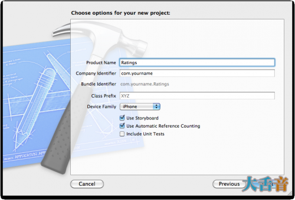
创建完成之后，Xcode的界面大概是这样的：
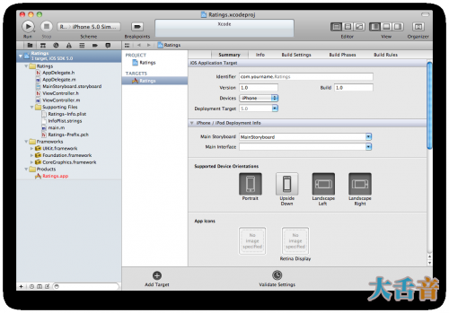
这
个新的工程由两个类：AppDelegate和ViewController以及一个Storyboard组成（如果你选择了两个设备会有两个
Storyboard），注意这个项目没有xib文件，让我们首先看看Storyboard是什么样的，双击Storyboard打开他：
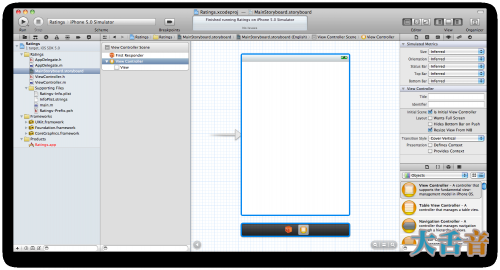
Storyboard
的样子和工作方式都和Interface
Builder（以下简称为IB）像极了，你可以从左下方的控件库中拖动控件到你的View之中并且组织他们的排放顺序，唯一不同的地方就
是，Storyboard不止是包含一个视图控件，而是所有的视图控件以及他们之间的关系。
Storyboard对一个视图的官方术语是一个场景，但是一个场景其实就是一个ViewController，在iPhone中一次只能够展示一个场景，而在iPad中一次可以展示多个场景，比如Mail应用程序。
通过尝试添加一些控件，你可以感受一下Storyboard的工作方式。
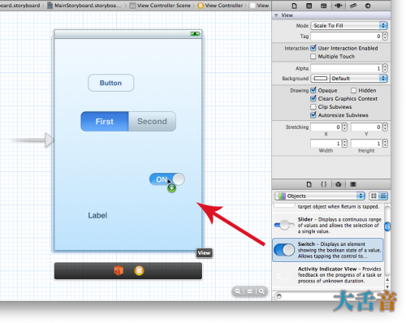
这个是数据显示器，显示所有场景及其控件的结构。
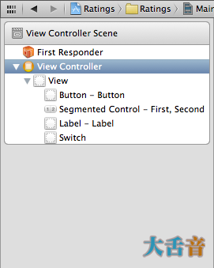
在IB中，这个位置显示的是你的NIB文件中的文件，而在Storyboard中这里显示的是ViewController，目前这里只有一个ViewController，我们接下来可能会增加一些。
这是一个文档管理器的缩小版，叫做dock。
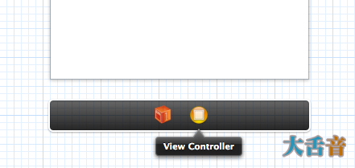
Dock
展示场景中第一级的控件，每个场景至少有一个ViewController和一个FirstReponder，但是也可以有其他的控件，Dock还用来简
单的连接控件，如果你需要向ViewController传递一个关系时，只需要将其按住Ctrl键拖到ViewController上就可以了。
Note:你大概不会太长使用FirstResponder，因为它只是一个代理控件，代表着当前你所使用的控件。
现在运行这个应用，他会向我们设计的界面一样。
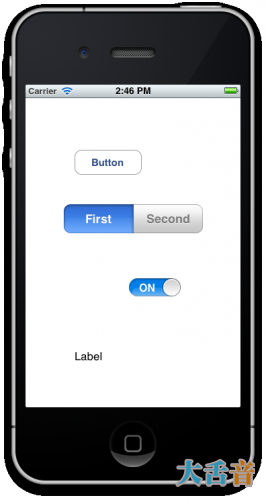
如果你以前制作过NIB型的应用的话，你也许回去寻找MainWindow.xib ，这个文件包括所有的ViewController，Appdelegate等等，但是在Storyboard中这个特性已经被废止了。
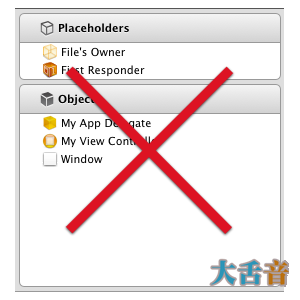
那么，没有这个文件，应用从那里起始呢？
让我们打开AppDelegate文件，看看那上面是怎么说的：
- #import <UIKit/UIKit.h>
- @interface AppDelegate : UIResponder <UIApplicationDelegate>
- @property (strong, nonatomic) UIWindow *window;
- @end
#import <UIKit/UIKit.h> @interface AppDelegate : UIResponder <UIApplicationDelegate> @property (strong, nonatomic) UIWindow *window; @end
如果要使用Storyboard特性，那么AppDelegate必须继承自UIResponder类， 之前则是继承自NSObject类的，而且必须有一个不是UIOutlet类的Window属性声明才可以。
如
果你再去看AppDelegate的执行文件，里面大概什么都没有，甚至连
application:didFinishLaunchingWithOptions: 也只是返回了一个
YES，而之前，这里则需声明一个ViewController并且将他设置成起始页面，但是现在这些都没有了。
秘密就在info.plist文件中， 打开Ratings-Info.plist (在 Supporting Files group里) 你就会看到这些：
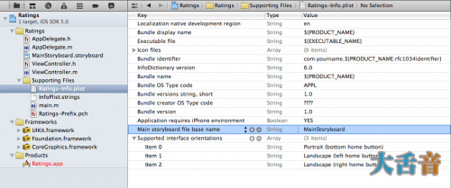
在
NIB为UI的应用里，info.plist文件中有一个键兼做NSMainNibFile，或者叫做Main nib file base
name，他用来指示UIApplication载入MainWindow.xib，并且将他与应用链接起来，而现在这个键值消失了。
而
Storyboard应用则利用 UIMainStoryboardFile，或者 “Main storyboard file base name”
键值来表示当App初始化时的Storyboard名称，当程序运行时，UIApplication会使用
MainStoryboard.sotryboard作为第一加载项，并且将他的UIWindow展示在屏幕上，不需要任何编程工作。
在项目总结面板上，你也可以看到并且编辑这些信息：
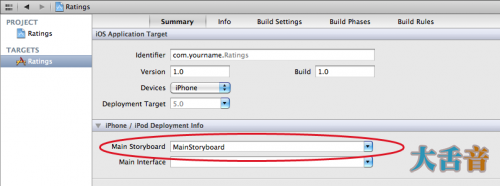
如果你还想设置nib文件的话，另外有地方去设置的。
为了完成这个实验性的小程序，我们打开main.m，加入
- #import <UIKit/UIKit.h>
- #import "AppDelegate.h"
- int main(int argc, char *argv[])
- {
- @autoreleasepool {
- return UIApplicationMain(argc, argv, nil,
- NSStringFromClass([AppDelegate class]));
- }
- }
#import <UIKit/UIKit.h>
#import "AppDelegate.h"
int main(int argc, char *argv[])
{
@autoreleasepool {
return UIApplicationMain(argc, argv, nil,
NSStringFromClass([AppDelegate class]));
}
}
之前是UIApplicationMain()的函数现在是空的， 变成了 NSStringFromClass([AppDelegate class]).
与
之前使用MainWindow.xib的一个最大的不同是：现在app delegate已经不是Storyboard的一部分了，这是因为app
delegate不再从nib文件中，而侍从Storyboard中加载了，我们必须告诉 UIApplicationMain 我们的app
delegate类的名字是什么，否则他将无法找到。
制作一个Tab类型的应用
本教程中的Rating App拥有两个Tab，在Storyboard中，很轻松就能够做出一个Tab视图。
回到MainStoryboard.storyboard中，直接从左边的Library拖进来一个TabViewController就可以了。
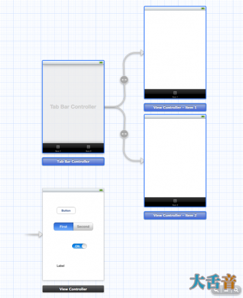
新
的Tab Bar Controller附带了两个View
controller，分别作为Tab的视图使用，UITabBarController被称为包含视图，因为他包含这其他一些View，其他常见的包含
视图还有那vi嘎提鸥鸟 Controller和SplitView Controller。
在iOS 5中，你还可以自己写一个自定义的Controller，这在以前是做不到的。
包含关系在Storyboard中用一下这种箭头表示。
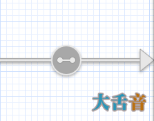
拉一个Label控件到第一个子试图中，命名为“First Tab”，再在第二个子视图中添加一个Label，命名为“Second Tab”。
注意：当屏幕的缩放大于100%时，你无法在单个场景中添加控件。
选中Tab Bar Controller，进入属性检查器，选中“作为起始场景”，如下图：
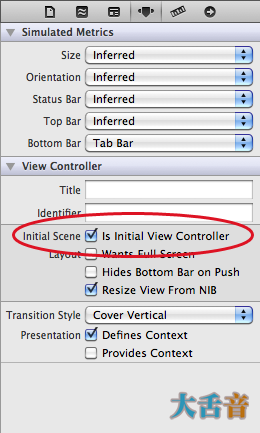
现在那个没有头的虚虚的小箭头指向了Tab Bar Controller，说明他是起始场景。
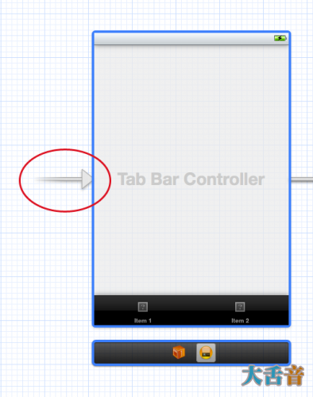
这意味着，当你启动这个应用的时候，UIApplication将会将这个场景作为应用的主屏幕。
Storyboard一定要有一个场景是起始场景才行。
现在运行试试吧
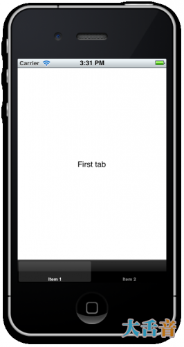
code专门为创造这种Tab Bar的应用准备了一个模板，我们也可以使用他，但是自己有能力不用模板自己做一个Tab Bar也是不错的事。
如果你添加了多于五个子视图到一个TabBarcontroller的话，并不会创造五个Tab，第四个tab会自动变成More标签，不错吧
制作一个表格视图
目前连接到Tab bar Controller的视图都是普通的View Controller，现在，我要用一个TableViewController来代替其中的一个ViewController。
单击第一个视图并删除，从Library中拖出一个TableViewController。
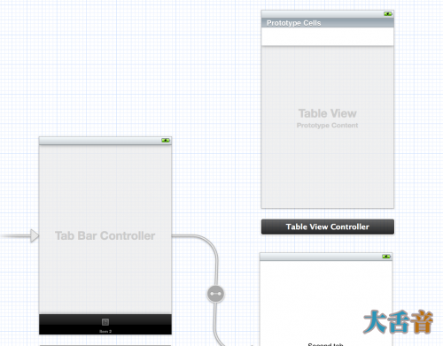
在选中这个TableViewController的前提下，从Library中拖出一个NavController，将会直接附着在上面。
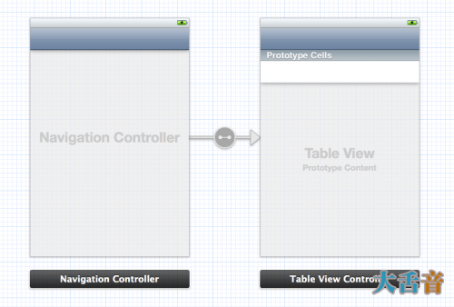
当然也可以调换顺序，我完全没意见。
由于NavController和TabBarController一样也是一个包含控制器视图，所以他也必须包含另一个视图，你可以看到同样的箭头连接者这两个View。
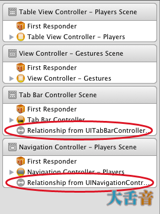
请注意所有嵌套在NavController下的View都会有一个Navigation Bar，你无法移除它，因为他是一个虚拟的Bar。
如果你检视属性检测器，你就会发现所有bar的属性都在一起：
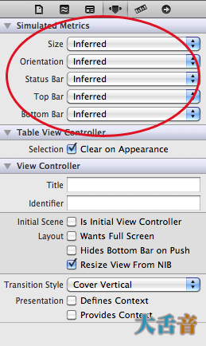
“Inferred”是Storyboard中的默认设置，他意味着继承的关系，但是你也可以改变他。但是请注意这些设置都是为了让你更好的进行设计和这样设置的，随意修改默认设置会带来不可遇见的后果，施主自重。
现在让我们把这个新的场景连接到Tab Bar Controller中，按住Ctrl拖动，或者右键。
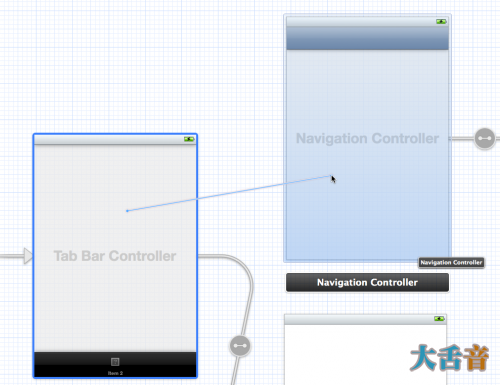
当你放手的时候，一个提示框会出现。
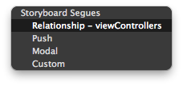
当然是选第一个了，Relationship – viewControllers ，这将自动创建两个场景之间的关系。
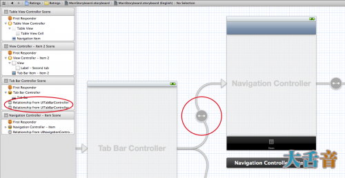
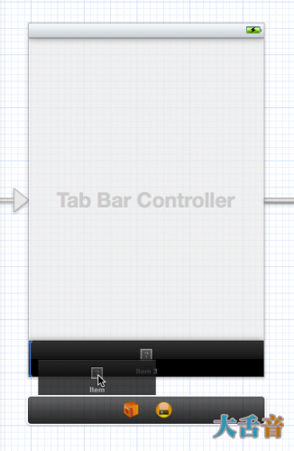
直接拖动就可以改变Tab Item的顺序，同时也会改变显示Tab的顺序，放在最左边的Tab会第一个显示。
现在运行试试看吧
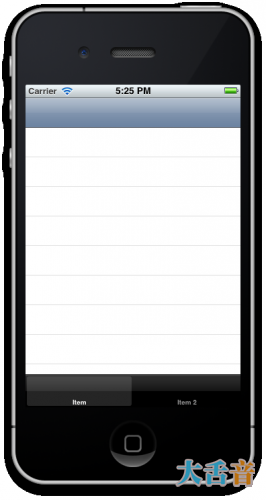
在我们在这个应用中加入任何实质性的功能之前，我们先来清理一下Storyboard，你不需要改变TabBarController中的任何内容而只需要改变他的子视图就可以了。
每当你连接一个新的视图到TabBarController中的时候，他就会自动增加一个Tab Item，你可以使用他的子视图来修改该Item的图片和名称。
在NavController中选中Tab Item并且在属性编辑其中将其修改为Player。
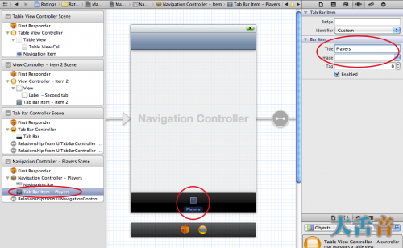
将第二个Tab Item命名为“Gesture”
我们接下来把自定义的图片加入到这些item中， 源码 中包含一个名为“Image”的文件夹，在那里你可以找到我们用到的资源。
接下来，将NavController的title改为Player，也可以使用代码··
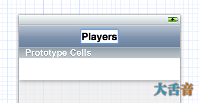
运行看一看，难以置信吧，你到现在也没写一条代码。
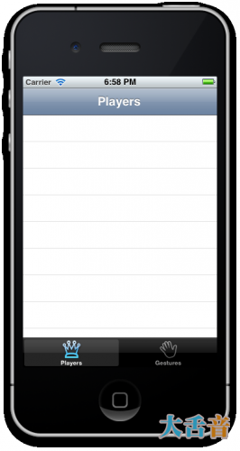
原型表格单元
你也许已经注意到了，自从我们加入了Table View Controller之后，Xcode便会现实下面这样一条警告。
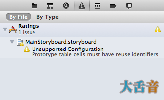
这条警告是：“Unsupported Configuration: Prototype table cells must have reuse identifiers”意思是，原型表格单元必须有一个身份证（意译啦）
原
型单元格是另一个Storyboard的好特性之一。在之前，如果你想要自定义一个Table
Cell，那么你就不得不用代码来实现，要么就要单独创建一个Nib文件来表示单元格内容，现在你也可以这样做，不过原型单元格可以帮你把这一过程大大的
简化，你现在可以直接在Storyboard设计器中完成这一过程。
Table View现在默认的会带有一个空白的原型单元格，选中他，在属性控制器中将他的Style改为subtitle，这样的话，每一格就会有两行字。
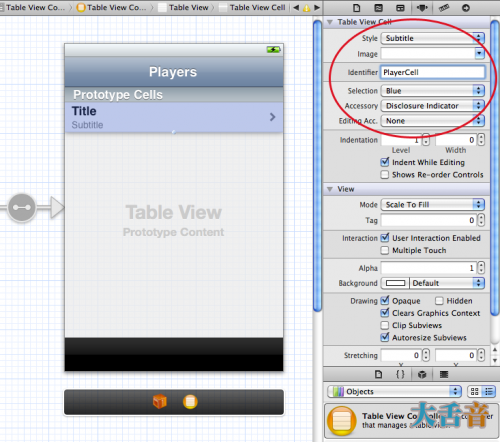
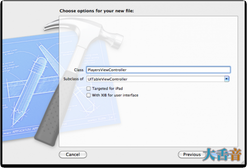
将附件设置为Disclosure Indicator并且将这个原型单元格的Reuse Identifier 设置喂“PlayerCell”，这将会解决Xcode所警告的问题。
试着运行一个，发现什么都没变，这并不奇怪，因为我们还没有给这个表格设置一个数据来源（DataSource），用以显示。
新建一个文件，使用UIViewContoller模板，命名为 PlayersViewController ，设置喂UITableViewController的子类，不要勾选建立XIB文件。
回到Storyboard编辑器，选择Table View Controller，在身份控制器中，把他的类设置为PlayerViewController，这对于把Storyboard中的场景和你自定义的子类挂钩是十分重要的。要是不这么做，你的子类根本没用。
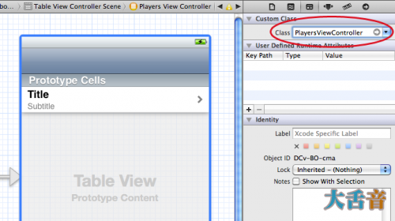
现在起，当你运行这个应用时，table view controller其实是PlayersViewContoller的一个实例。
在 PlayersViewController.h 中声明一个MutableArray（可变数组）
- #import <UIKit/UIKit.h>
- @interface PlayersViewController : UITableViewController
- @property (nonatomic, strong) NSMutableArray *players;
- @end
#import <UIKit/UIKit.h> @interface PlayersViewController : UITableViewController @property (nonatomic, strong) NSMutableArray *players; @end
这个数组将会包含我们的应用的主要数据模型。我们现在加一些东西到这个数组之中，新建一个使用Obj-c模板的文件，命名为player，设置喂NSObject的子类，这将会作为数组的数据容器。
编写Player.h如下：
- @interface Player : NSObject
- @property (nonatomic, copy) NSString *name;
- @property (nonatomic, copy) NSString *game;
- @property (nonatomic, assign) int rating;
- @end
@interface Player : NSObject @property (nonatomic, copy) NSString *name; @property (nonatomic, copy) NSString *game; @property (nonatomic, assign) int rating; @end
编写Player.m如下：
- #import "Player.h"
- @implementation Player
- @synthesize name;
- @synthesize game;
- @synthesize rating;
- @end
#import "Player.h" @implementation Player @synthesize name; @synthesize game; @synthesize rating; @end
这里没有什么复杂的，Player类只是一个容器罢了，包含三个内容：选手的名字、项目和他的评级。
接下来我们在App Delegate中声明数组和一些Player对象，并把他们分配给PlayerViewController的players属性。
在AppDelegate.m中，分别引入（import）Player和PlayerViewController这两个类，之后新增一个名叫players的可变数组。
- #import "AppDelegate.h"
- #import "Player.h"
- #import "PlayersViewController.h"
- @implementation AppDelegate {
- NSMutableArray *players;
- }
- // Rest of file...
#import "AppDelegate.h"
#import "Player.h"
#import "PlayersViewController.h"
@implementation AppDelegate {
NSMutableArray *players;
}
// Rest of file...
修改didFinishLaunchingWithOptions方法如下：
- - (BOOL)application:(UIApplication *)application didFinishLaunchingWithOptions:(NSDictionary *)launchOptions
- {
- players = [NSMutableArray arrayWithCapacity:20];
- Player *player = [[Player alloc] init];
- player.name = @"Bill Evans";
- player.game = @"Tic-Tac-Toe";
- player.rating = 4;
- [players addObject:player];
- player = [[Player alloc] init];
- player.name = @"Oscar Peterson";
- player.game = @"Spin the Bottle";
- player.rating = 5;
- [players addObject:player];
- player = [[Player alloc] init];
- player.name = @"Dave Brubeck";
- player.game = @"Texas Hold’em Poker";
- player.rating = 2;
- [players addObject:player];
- UITabBarController *tabBarController =
- (UITabBarController *)self.window.rootViewController;
- UINavigationController *navigationController =
- [[tabBarController viewControllers] objectAtIndex:0];
- PlayersViewController *playersViewController =
- [[navigationController viewControllers] objectAtIndex:0];
- playersViewController.players = players;
- return YES;
- }
- (BOOL)application:(UIApplication *)application didFinishLaunchingWithOptions:(NSDictionary *)launchOptions
{
players = [NSMutableArray arrayWithCapacity:20];
Player *player = [[Player alloc] init];
player.name = @"Bill Evans";
player.game = @"Tic-Tac-Toe";
player.rating = 4;
[players addObject:player];
player = [[Player alloc] init];
player.name = @"Oscar Peterson";
player.game = @"Spin the Bottle";
player.rating = 5;
[players addObject:player];
player = [[Player alloc] init];
player.name = @"Dave Brubeck";
player.game = @"Texas Hold’em Poker";
player.rating = 2;
[players addObject:player];
UITabBarController *tabBarController =
(UITabBarController *)self.window.rootViewController;
UINavigationController *navigationController =
[[tabBarController viewControllers] objectAtIndex:0];
PlayersViewController *playersViewController =
[[navigationController viewControllers] objectAtIndex:0];
playersViewController.players = players;
return YES;
}
这将会创造一些Player对象并把他们加到数组中去。之后在加入：
- UITabBarController *tabBarController = (UITabBarController *)
- self.window.rootViewController;
- UINavigationController *navigationController =
- [[tabBarController viewControllers] objectAtIndex:0];
- PlayersViewController *playersViewController =
- [[navigationController viewControllers] objectAtIndex:0];
- playersViewController.players = players;
UITabBarController *tabBarController = (UITabBarController *) self.window.rootViewController; UINavigationController *navigationController = [[tabBarController viewControllers] objectAtIndex:0]; PlayersViewController *playersViewController = [[navigationController viewControllers] objectAtIndex:0]; playersViewController.players = players;
咦，这是什么？目前的情况是：我们希望能够将players数组连接到PlayersViewController的players属性之
中以便让这个VC能够用做数据来源。但是app
delegate根本不了解PlayerViewController究竟是什么，他将需要在storyboard中寻找它。
这是一个
我不是很喜欢storyboard特性，在IB中，你在MainWindow.xib中总是会有一个指向App
delegate的选项，在那里你可以在顶级的ViewController中向Appdelegate设置输出口，但是在Storyboard中目前这
还不可能，目前只能通过代码来做这样的事情。
- UITabBarController *tabBarController = (UITabBarController *)
- self.window.rootViewController;
UITabBarController *tabBarController = (UITabBarController *) self.window.rootViewController;
我们知道storyboard的起始场景是Tab Bar Controller，所以我们可以直接到这个场景的第一个子场景来设置数据源。
PlayersViewController 在一个NavController的框架之中，所以我们先看一看UINavigationController类：
- UINavigationController *navigationController = [[tabBarController
- viewControllers] objectAtIndex:0];
UINavigationController *navigationController = [[tabBarController viewControllers] objectAtIndex:0];
然后询问它的根试图控制器，哪一个是我们要找的PlayersViewController：
- PlayersViewController *playersViewController =
- [[navigationController viewControllers] objectAtIndex:0];
PlayersViewController *playersViewController = [[navigationController viewControllers] objectAtIndex:0];
但是，UIViewController根本就没有一个rootViewController属性，所以我们不能把数组加入进去，他又一个topViewController但是指向最上层的视图，与我们这里的意图没有关系。
现在我们有了一个装在了players物体合集的数组，我们继续为PlayersViewController设置数据源。
打开PlayersViewController.m，加入以下数据源方法：
- - (NSInteger)numberOfSectionsInTableView:(UITableView *)tableView
- {
- return 1;
- }
- - (NSInteger)tableView:(UITableView *)tableView
- numberOfRowsInSection:(NSInteger)section
- {
- return [self.players count];
- }
- (NSInteger)numberOfSectionsInTableView:(UITableView *)tableView
{
return 1;
}
- (NSInteger)tableView:(UITableView *)tableView
numberOfRowsInSection:(NSInteger)section
{
return [self.players count];
}
真正起作用的代码在cellForRowAtIndexPath方法里，默认的模板是如下这样的：
- - (UITableViewCell *)tableView:(UITableView *)tableView
- cellForRowAtIndexPath:(NSIndexPath *)indexPath
- {
- static NSString *CellIdentifier = @"Cell";
- UITableViewCell *cell = [tableView
- dequeueReusableCellWithIdentifier:CellIdentifier];
- if (cell == nil) {
- cell = [[UITableViewCell alloc]
- initWithStyle:UITableViewCellStyleDefault
- reuseIdentifier:CellIdentifier];
- }
- // Configure the cell...
- return cell;
- }
- (UITableViewCell *)tableView:(UITableView *)tableView
cellForRowAtIndexPath:(NSIndexPath *)indexPath
{
static NSString *CellIdentifier = @"Cell";
UITableViewCell *cell = [tableView
dequeueReusableCellWithIdentifier:CellIdentifier];
if (cell == nil) {
cell = [[UITableViewCell alloc]
initWithStyle:UITableViewCellStyleDefault
reuseIdentifier:CellIdentifier];
}
// Configure the cell...
return cell;
}
无疑这就是以前设置一个表格视图的方法，不过现在已经革新了，把这些代码修改如下：
- - (UITableViewCell *)tableView:(UITableView *)tableView cellForRowAtIndexPath:(NSIndexPath *)indexPath
- {
- UITableViewCell *cell = [tableView
- dequeueReusableCellWithIdentifier:@"PlayerCell"];
- Player *player = [self.players objectAtIndex:indexPath.row];
- cell.textLabel.text = player.name;
- cell.detailTextLabel.text = player.game;
- return cell;
- }
- (UITableViewCell *)tableView:(UITableView *)tableView cellForRowAtIndexPath:(NSIndexPath *)indexPath
{
UITableViewCell *cell = [tableView
dequeueReusableCellWithIdentifier:@"PlayerCell"];
Player *player = [self.players objectAtIndex:indexPath.row];
cell.textLabel.text = player.name;
cell.detailTextLabel.text = player.game;
return cell;
}
这看上去简单多了，为了新建单元格，你只需使用如下代码：
- UITableViewCell *cell = [tableView
- dequeueReusableCellWithIdentifier:@"PlayerCell"];
UITableViewCell *cell = [tableView dequeueReusableCellWithIdentifier:@"PlayerCell"];
如果没有现存的单元格可以回收，程序会自动创造一个原型单元格的复制品之后返回给你，你只需要提供你之前在Storyboard编辑视图中设置的身份证就可以的，在这里就是“PlayerCell”，如果不设置这个，这个程序就无法工作。
由于这个类对于Player容器目前一无所知，所以我们需要在文件的开头加入一个引入来源
- #import "Player.h"
#import "Player.h"
记得要创建synthesize语句哦亲
- @synthesize players;
@synthesize players;
现在运行应用，会看到Table里有着players容器。
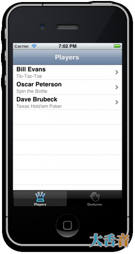
请注意：我们这里只使用一种单元格原型，如果你需要使用不同类型的单元格的话，只需要在storyboard中另外加入一个单元格原型就可以了，不过不要忘记给他们指派不同的身份证。
设计自定义的原型单元格
对于很多应用来说，使用默认的单元格风格就OK了，但是我偏偏要在每一个单元格的右边加上一个一个图片来表示选手的评级，但是添加图片对于默认类型的单元格来说并不支持，我们需要自定义一个设计。
让我们转回MainStoryboard.storyboard，选中table view中的prototype cell，把它的Style attribute改为Custom，所有默认的标签都会消失。
首先把单元格变得更高一些，你可以直接拉它，也可以在大小控制器中修改数字，我在这里使用55点的高度。
从 Objects Library中拖出两个标签物体，按照之前的样式安插到单元格里，记得设置label的Highlighted颜色为白色，那样的话当单元格被选中的时候会看起来更好看一些。
之后添加一个Image View对象，将它放置在单元格的右边，设置他的宽度为81点，高度并不重要，在属性检查器中设置模式为置中。
我把标签设置为210点长以确保他不会和ImageView重合，最后整体的设计会看起来象下面这样：
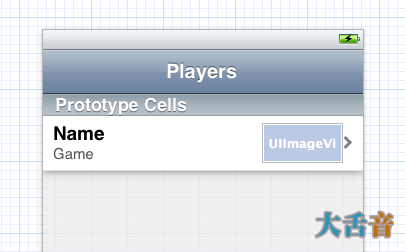
由于这是一个自定义的单元格，所以我们不能够使用UITableView默认的textLabel和detailLabel来设置数据，这些属性也不再指向我们的单元格了，我们使用标签（tags）来指定标签。
将Name标签的tag设置为100，Game的设置喂101，image的设置喂102，在属性检查器里设置哦亲。
之后打开 PlayersViewController.m ，在PlayersViewcontroller中将cellForRowatIndexPath修改为：
- - (UITableViewCell *)tableView:(UITableView *)tableView
- cellForRowAtIndexPath:(NSIndexPath *)indexPath
- {
- UITableViewCell *cell = [tableView
- dequeueReusableCellWithIdentifier:@"PlayerCell"];
- Player *player = [self.players objectAtIndex:indexPath.row];
- UILabel *nameLabel = (UILabel *)[cell viewWithTag:100];
- nameLabel.text = player.name;
- UILabel *gameLabel = (UILabel *)[cell viewWithTag:101];
- gameLabel.text = player.name;
- UIImageView * ratingImageView = (UIImageView *)
- [cell viewWithTag:102];
- ratingImageView.image = [self imageForRating:player.rating];
- return cell;
- }
- (UITableViewCell *)tableView:(UITableView *)tableView
cellForRowAtIndexPath:(NSIndexPath *)indexPath
{
UITableViewCell *cell = [tableView
dequeueReusableCellWithIdentifier:@"PlayerCell"];
Player *player = [self.players objectAtIndex:indexPath.row];
UILabel *nameLabel = (UILabel *)[cell viewWithTag:100];
nameLabel.text = player.name;
UILabel *gameLabel = (UILabel *)[cell viewWithTag:101];
gameLabel.text = player.name;
UIImageView * ratingImageView = (UIImageView *)
[cell viewWithTag:102];
ratingImageView.image = [self imageForRating:player.rating];
return cell;
}
这里是用了一个新的方法，叫做ImageRating，在 cellForRowAtIndexPath方法之前加入这个方法：
- - (UIImage *)imageForRating:(int)rating
- {
- switch (rating)
- {
- case 1: return [UIImage imageNamed:@"1StarSmall.png"];
- case 2: return [UIImage imageNamed:@"2StarsSmall.png"];
- case 3: return [UIImage imageNamed:@"3StarsSmall.png"];
- case 4: return [UIImage imageNamed:@"4StarsSmall.png"];
- case 5: return [UIImage imageNamed:@"5StarsSmall.png"];
- }
- return nil;
- }
- (UIImage *)imageForRating:(int)rating
{
switch (rating)
{
case 1: return [UIImage imageNamed:@"1StarSmall.png"];
case 2: return [UIImage imageNamed:@"2StarsSmall.png"];
case 3: return [UIImage imageNamed:@"3StarsSmall.png"];
case 4: return [UIImage imageNamed:@"4StarsSmall.png"];
case 5: return [UIImage imageNamed:@"5StarsSmall.png"];
}
return nil;
}
这就完成了，运行看看：
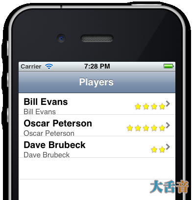
这
和我们想象的结果并不是很符合，我们修改了原型单元格的属性和高度，但是table
view却没有考虑进去，有两种方法可以修复它，我们可以改变table view的行高或者加入 heightForRowAtIndexPath
方法来修改，地一种方法更简单，我们就用他。
注意：在一下两种情况下，你应该使用 heightForRowAtIndexPath 方法：一是，你不能预先知道你的单元格的高度，二是不同的单元格会有不同的高度。
回到MainStoryboard.storyboard,在大小检查器中将高度设置为55:
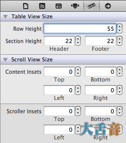
通过这种方式的话，如果之前你是使用拖动而不是键入数值的方式改变高度的属性的话，则table view的数值也会自动改变。
现在运行看看，好多了吧
为原型单元格设置子类
我们的表格视图已经相当像模像样了，但是我并不是很喜欢使用tag来访问label，要是我们能够把这些lable连接到输出口，之后在回应属性中使用他们，该多好，而且不出所料，我们可以这样做。
使用 Objective-C class模板新建一个文件，命名为PlayerCell，继承UITableViewCell。
修改PlayerCell.h
- @interface PlayerCell : UITableViewCell
- @property (nonatomic, strong) IBOutlet UILabel *nameLabel;
- @property (nonatomic, strong) IBOutlet UILabel *gameLabel;
- @property (nonatomic, strong) IBOutlet UIImageView
- *ratingImageView;
- @end
@interface PlayerCell : UITableViewCell @property (nonatomic, strong) IBOutlet UILabel *nameLabel; @property (nonatomic, strong) IBOutlet UILabel *gameLabel; @property (nonatomic, strong) IBOutlet UIImageView *ratingImageView; @end
修改PlayerCell.m
- #import "PlayerCell.h"
- @implementation PlayerCell
- @synthesize nameLabel;
- @synthesize gameLabel;
- @synthesize ratingImageView;
- @end
#import "PlayerCell.h" @implementation PlayerCell @synthesize nameLabel; @synthesize gameLabel; @synthesize ratingImageView; @end
这个类本身并不其很大的作用，只是为nameLabel、gameLabel和ratingImageView声明了属性。
回
到MainStoryboard.storyboard选中原型单元格，将他的class属性修改为“PlayerCell”，现在当你向table
view请求dequeueReusableCellWithIdentifier，他会返回一个PlayerCell实例而不是一个普通的
UITableViewCell实例。
请注意我将这个类和reuse Indetifier的名字命名的一样，只是营卫我喜欢这样哦亲，这两个之间其实没啥关系。
现在你可以将标签和image view连接到输出口去了，选中或者将他从链接检查器拖动到table view cell。
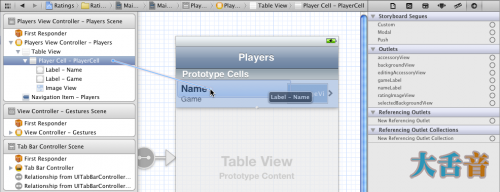
请注意：要把这个control连接到table view cell而不是view controller哦亲，别选错了。
现在我们把一切都链接好了，只需要加入数据源的代码就可以了。
- - (UITableViewCell *)tableView:(UITableView *)tableView cellForRowAtIndexPath:(NSIndexPath *)indexPath
- {
- PlayerCell *cell = (PlayerCell *)[tableView
- dequeueReusableCellWithIdentifier:@"PlayerCell"];
- Player *player = [self.players objectAtIndex:indexPath.row];
- cell.nameLabel.text = player.name;
- cell.gameLabel.text = player.game;
- cell.ratingImageView.image = [self
- imageForRating:player.rating];
- return cell;
- }
- (UITableViewCell *)tableView:(UITableView *)tableView cellForRowAtIndexPath:(NSIndexPath *)indexPath
{
PlayerCell *cell = (PlayerCell *)[tableView
dequeueReusableCellWithIdentifier:@"PlayerCell"];
Player *player = [self.players objectAtIndex:indexPath.row];
cell.nameLabel.text = player.name;
cell.gameLabel.text = player.game;
cell.ratingImageView.image = [self
imageForRating:player.rating];
return cell;
}
我们现在将接收到 dequeueReusableCellWithIdentifier 的控件指派到PlayerCell，只需要简单的使用已经链接labels和image view到设置好的属性上就可以了，这会让这个设计看上去更加好控制，更加简明。
当然，在PlayerCell前要引入资源：
- #import "PlayerCell.h"
#import "PlayerCell.h"
试着运行，你会发现其实什么都没有变化，可是我们都知道，内部已经有了变化。
在这相同的场景下面，我们可是在使用子类呢。
这里还有一些设计小窍门：第一点：一定要设置标签被选中时的颜色。
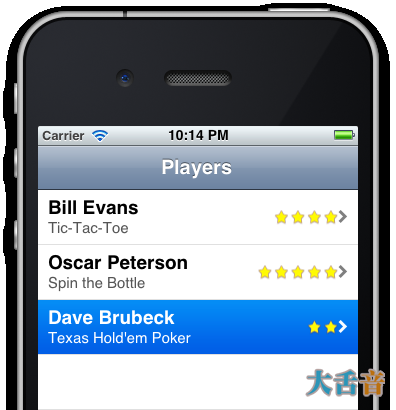
第二点，确保你加入单元格的字符大小是可以变化的，这样，当单元格大小变化时，他的内容的大小也会跟着变化，比如说：
在PlayersViewController.m中加入如下方法：
- - (void)tableView:(UITableView *)tableView commitEditingStyle:(UITableViewCellEditingStyle)editingStyle forRowAtIndexPath:(NSIndexPath *)indexPath
- {
- if (editingStyle == UITableViewCellEditingStyleDelete)
- {
- [self.players removeObjectAtIndex:indexPath.row];
- [tableView deleteRowsAtIndexPaths:[NSArray arrayWithObject:indexPath] withRowAnimation:UITableViewRowAnimationFade];
- }
- }
- (void)tableView:(UITableView *)tableView commitEditingStyle:(UITableViewCellEditingStyle)editingStyle forRowAtIndexPath:(NSIndexPath *)indexPath
{
if (editingStyle == UITableViewCellEditingStyleDelete)
{
[self.players removeObjectAtIndex:indexPath.row];
[tableView deleteRowsAtIndexPaths:[NSArray arrayWithObject:indexPath] withRowAnimation:UITableViewRowAnimationFade];
}
}
这个方法加入好了之后，用手指轻扫一行单元格，会出现一个删除键，试试看
Delete按钮出现在右边，遮住了一部分评级图片，怎么解决呢？
打开MainStoryBoard.storyboard，选中table view cell中的image view，在大小检查器中修改Autosizing属性，是它能够跟随上级view的边缘。
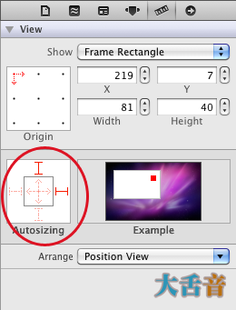
为labels设置同样的属性。
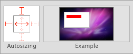
加入了这些变动之后，删除按钮如我们意料的出现了：
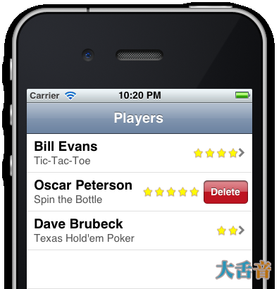
其实，最好的做法是让这些星星在出现delete按钮的时候消失，不过这只是一个练习，不要太较真哦亲